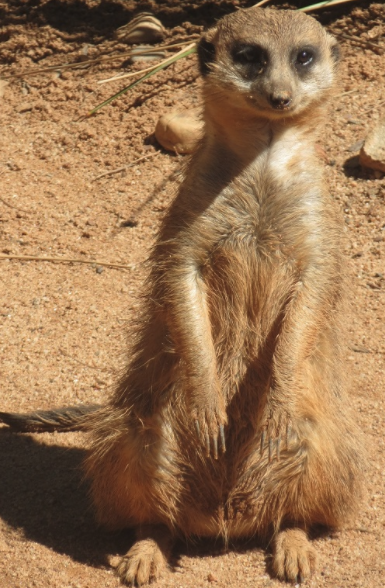
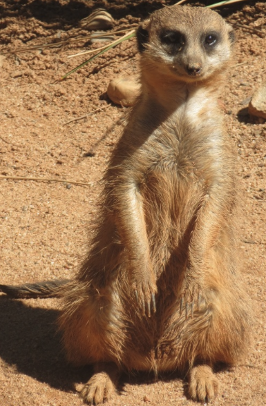
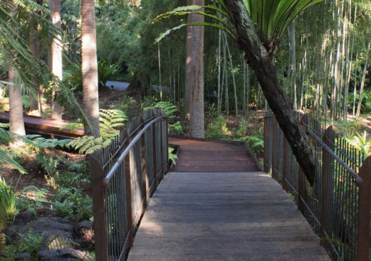
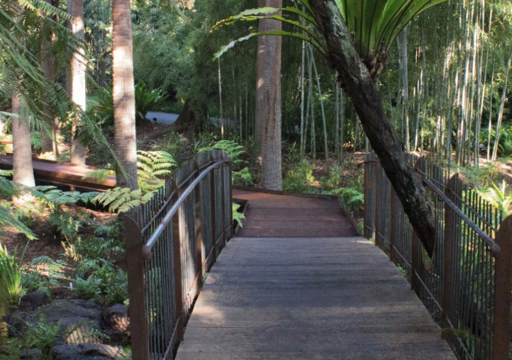
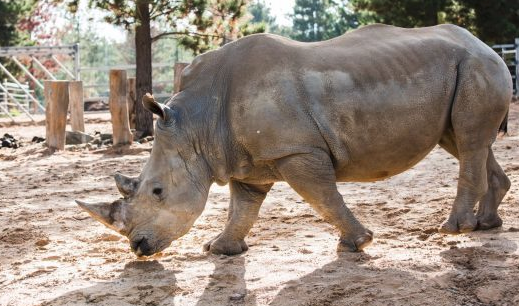
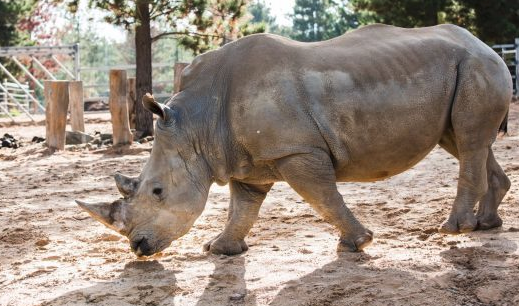

The
National Zoo and Aquarium is privately owned by Canberra businessman Richard Tindale, and is maintained as a predominantly family-run business. The zoo receives no Government or Commonwealth support, and relies on entry fees from the public to continue operations. The zoo also relies on a large number of volunteer recruits to aid in the management of its grounds and the animals residing there.
The Zoo is the only combined zoo and aquarium in Australia. The zoo has both Australian endemic species and introduced species including the largest collection of big cats in Australia, including, until recently, the only tiglon in Australasia. The zoo is also involved in a number of breeding programs for endangered species.
The National Zoo and Aquarium plays host to many educational programs and specially designed tours for various groups; including school tours, family groups, and children's birthday Tours. The zoo runs children's activities during ACT public school holiday periods and a hands-on educational program for children from 8–16 years of age on weekends during the term.
The Zoo runs interactive Tours and animal experiences for visitors, including the award-winning ZooVenture Tour, the keeper for a day experience, Walk on the Wild Side, the Family Tour, Meet a Cheetah, plus daily information sessions and weekend Keeper Talks

 

 

 
